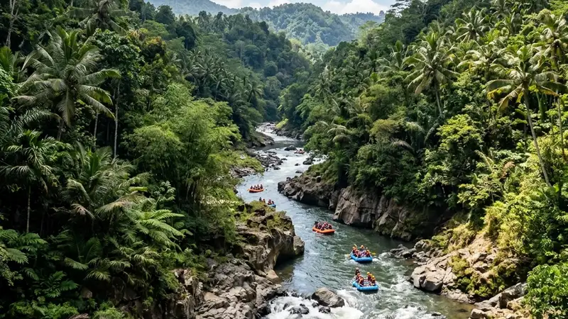

Tingkat kesulitan rafting Kaliwatu berada di grade 2 yang ramah pemula, sedangkan rafting Kasembon berada di grade 2 hingga 3+ dengan jeram yang lebih tinggi dan arus lebih dinamis.
- Kaliwatu memiliki jeram bergrade 2 dengan arus yang deras namun terkendali.
- Kasembon memiliki sekitar delapan titik jeram, sebagian dengan ketinggian tiga hingga empat meter.
- Karakter sungai memengaruhi jenis peserta yang direkomendasikan pada masing-masing lokasi.
- Standar keselamatan seperti guide bersertifikat dan tim rescue tetap diterapkan di kedua lokasi.
Apa Itu Grade Jeram dalam Rafting?
Grade jeram adalah sistem klasifikasi internasional yang menunjukkan tingkat kesulitan arus sungai, mulai dari grade 1 yang sangat tenang hingga grade 6 yang ekstrem dan berbahaya.
Dalam konteks rafting Kaliwatu dan Kasembon, grade yang umum digunakan berkisar antara 2 hingga 3+. Grade 2 menandakan arus cukup deras dengan gelombang kecil hingga sedang yang masih dapat dilalui pemula dengan pendampingan guide. Grade 3 ke atas menandakan arus yang lebih kuat, gelombang lebih besar, dan membutuhkan koordinasi tim yang lebih baik antar peserta dalam satu perahu.
Sistem grade ini menjadi acuan penting bagi operator untuk menentukan syarat usia, kondisi fisik, dan jumlah pendamping yang dibutuhkan pada setiap lintasan.
Berapa Grade Jeram di Rafting Kaliwatu?
Jeram di rafting Kaliwatu umumnya berada pada grade 2, yang berarti arusnya cukup deras untuk memacu adrenalin namun masih tergolong aman bagi peserta tanpa pengalaman sebelumnya.
Sungai Brantas di kawasan Bumiaji, Kota Batu, memiliki karakter arus yang stabil dengan beberapa titik jeram yang tersebar di sepanjang lintasan sepanjang kurang lebih 7 hingga 9 kilometer. Kondisi inilah yang membuat Kaliwatu kerap direkomendasikan sebagai lokasi rafting pertama bagi wisatawan yang belum pernah mencoba arung jeram sama sekali.
Meski tergolong ramah pemula, peserta tetap wajib mengenakan pelampung, helm, dan mengikuti arahan guide selama pengarungan karena arus sungai tetap dapat berubah sewaktu-waktu, terutama pada musim hujan.
Berapa Grade Jeram di Rafting Kasembon?
Jeram di rafting Kasembon umumnya berada pada kisaran grade 2 hingga 3+, dengan sekitar delapan titik jeram yang tersebar di sepanjang lintasan Sungai Konto dan Sumber Dandang.
Beberapa jeram di kawasan ini disebut memiliki ketinggian hingga tiga sampai empat meter, menciptakan sensasi hentakan yang lebih terasa dibandingkan lintasan Kaliwatu. Karakter sungai yang berkelok di antara perbukitan dan area persawahan turut menambah variasi arus yang harus diantisipasi peserta selama pengarungan.
Karena tingkat kesulitannya yang lebih tinggi, Kasembon umumnya lebih diminati oleh peserta yang sudah memiliki pengalaman rafting sebelumnya atau yang secara khusus mencari tantangan ekstra saat berlibur.
Mengapa Kasembon Dianggap Lebih Menantang daripada Kaliwatu?
Kasembon dianggap lebih menantang karena jumlah dan ketinggian jeramnya lebih signifikan, serta karakter arus Sungai Konto yang lebih dinamis dibandingkan Sungai Brantas di kawasan Kaliwatu.
Selain faktor jeram, kontur sungai di Kasembon yang melewati celah bebatuan dan tikungan tajam turut menambah tingkat kewaspadaan yang dibutuhkan peserta. Kombinasi arus yang lebih kuat dan medan yang lebih variatif inilah yang membuat pengalaman di Kasembon terasa lebih memacu adrenalin dibandingkan Kaliwatu, meski jarak tempuh keduanya relatif berdekatan.
Faktor cuaca dan musim juga dapat memengaruhi tingkat kesulitan di kedua lokasi, sehingga debit air pada hari kunjungan tetap perlu dikonfirmasi ke pihak operator.
Apakah Peserta Pemula Tetap Bisa Mencoba Rafting Kasembon?
Peserta pemula tetap dapat mencoba rafting Kasembon selama dalam kondisi fisik yang baik dan didampingi guide serta tim rescue bersertifikat, meski disarankan memiliki sedikit pengalaman fisik atau olahraga air sebelumnya.
Operator Kasembon umumnya tetap membuka paket family trip dengan pendampingan lebih intensif bagi peserta baru, namun tetap menerapkan batas usia minimal sekitar 12 tahun demi alasan keselamatan. Bagi peserta yang benar-benar belum pernah mencoba arung jeram sama sekali, mencoba lintasan yang lebih ringan seperti Kaliwatu terlebih dahulu bisa menjadi langkah adaptasi yang lebih nyaman sebelum mencoba tantangan di Kasembon.
Bagaimana Standar Keselamatan di Kedua Lokasi?
Kedua lokasi menerapkan standar keselamatan serupa berupa pelampung, helm, guide bersertifikat, dan tim rescue yang siap siaga di sepanjang lintasan.
Peserta di Kaliwatu maupun Kasembon akan mendapatkan pengarahan keselamatan sebelum memulai pengarungan, termasuk teknik dasar mendayung dan prosedur yang harus dilakukan apabila perahu terbalik. Asuransi kecelakaan juga umumnya sudah termasuk dalam paket yang dibeli, meski detail cakupannya sebaiknya dikonfirmasi langsung ke masing-masing operator sebelum keberangkatan.
FAQ
Rafting mana yang lebih menantang, Kaliwatu atau Kasembon?
Rafting Kasembon umumnya dianggap lebih menantang karena grade jeramnya lebih tinggi dan jumlah titik jeramnya lebih banyak dibandingkan Kaliwatu.
Apakah rafting Kaliwatu cocok untuk yang belum pernah mencoba arung jeram?
Rafting Kaliwatu cocok untuk pemula karena tingkat kesulitannya berada di grade 2 dengan arus yang lebih terkendali.
Apakah ada batas usia untuk mencoba rafting Kasembon?
Rafting Kasembon umumnya menetapkan usia minimal sekitar 12 tahun bagi peserta demi alasan keselamatan.
Arya
penulis artikel yang sudah berpengalaman di dalam dunia wisata outbound Batu Malang.